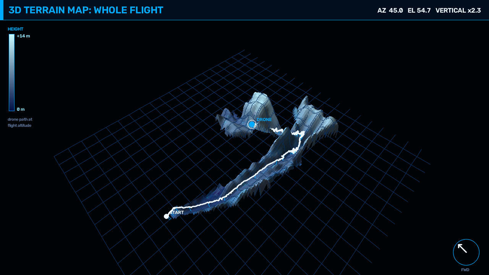

PATHFINDER
One camera, on-board perception, and an AI copilot that decides the next move once per second. Every decision is written to a hash chain on Monad while the drone is still in the air. Nobody can rewrite the flight log afterwards without the change showing up. You can check it below: your browser recomputes the chain and compares it with the contract.
RECORDED FLIGHT
VERIFY AGAINST MONAD
Your browser downloads the full flight log (every scene summary, decision and reason), recomputes the keccak256 hash chain locally and reads the head stored by the FlightRecorder contract over the public RPC. No server of ours is involved.
HOW IT WORKS
01 · PERCEIVE ON THE VEHICLE
CLIP terrain, Depth Anything V2 metric depth, YOLO-World 3D obstacles, visual-odometry world map, Dijkstra planner. All on the drone's GPU, and no pixels leave it.
02 · DECIDE AT 1 HZ
An AI copilot (Nemotron, or a local rule set offline) reads a ~1 KB scene summary and picks PROCEED / SLOW / VEER / CLIMB / HOLD / RETURN. A deterministic safety guard can veto it.
03 · RECORD ON MONAD
Each decision is one logDecision transaction:
action, AI proposal, risk, override flag and the hash of the full log entry, folded into a per-mission hash chain.
Sub-second blocks keep the on-chain log within about a second of the vehicle, so a crash or a seized
laptop loses at most the last decision.
04 · ANYONE CAN AUDIT
Insurers, regulators, customers and incident investigators get the log file, recompute the chain and compare it with the contract. If one edited reason, dropped override or reordered step breaks the match, the verifier names the first entry that changed.
head₀ = 0x00…00 headₙ = keccak256(headₙ₋₁ ‖ tMs ‖ action ‖ proposed ‖ riskBps ‖ overridden ‖ keccak256(canonicalJSON(entryₙ)))
3D MAP OF THE FLIGHT
